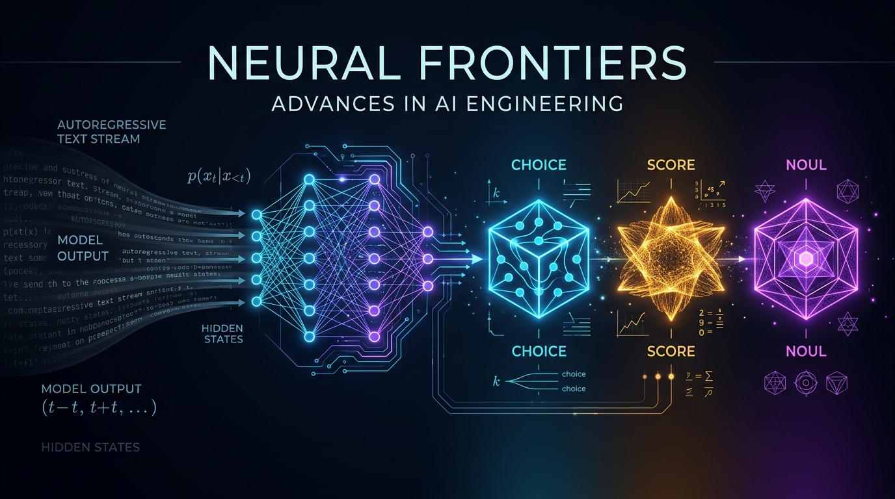
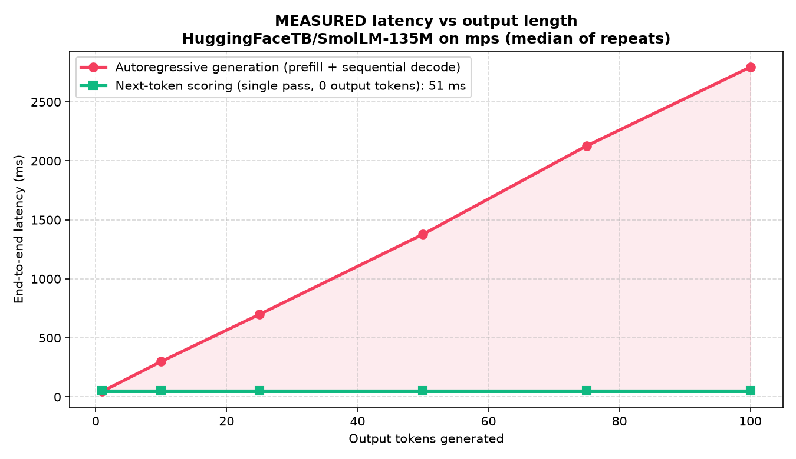

Decisions, Not Essays: How Jev Reads Answers Straight Out of an LLM — and What We Got Wrong Reproducing It
When the set of valid answers is already known, generating JSON token-by-token is wasted work. This is an honest, hands-on reproduction of Jev's non-autoregressive "System One" mechanism on SmolLM-135M — with real measured numbers (a ~26× speedup, 0 output tokens), a candid account of the untrained-head wrong turn we took first, and a proper treatment of RLCD calibration.

At 03:14 AM, an automated webhook deposits an urgent incident ticket into your operational triage queue:
"Urgent: Payment gateway returns 502 Bad Gateway during checkout on /api/v2/pay. Customers cannot complete transactions."
Consider what your production orchestration system actually requires at this exact moment. It does not need a polite opening salutation. It does not need a three-paragraph synthetic essay dissecting the architectural history of payment aggregators. It does not even need conversational English.
Your incident router requires precisely three atomic, structured determinations:
- Is this an active customer-facing outage? (Binary:
yesorno) - Which engineering squad owns triage? (Categorical:
billing,auth,infrastructure, orfrontend) - What is the operational severity? (Ordinal:
SEV-1,SEV-2,SEV-3, orSEV-4)
The standard architectural reflex across the industry over the past three years has been deeply inefficient: construct a massive system prompt, define a Pydantic schema, pipe the prompt into an autoregressive large language model, and wait. You wait between 1,000 and 2,000 milliseconds while an attention loop calculates key-value caches and serializes tokens one by one into a JSON string—hoping that trailing commas or hallucinated keys do not crash your parser downstream.
In his landmark treatise Thinking, Fast and Slow, Daniel Kahneman codified human cognition into two operational regimes: System 1, which operates automatically, instinctively, and rapidly with minimal conscious deliberation; and System 2, which allocates attention to effortful, serial, and computationally expensive mental operations. When an autoregressive LLM generates structured text to classify an incident, it behaves like an agonizingly sluggish System 2: it spends hundreds of decoding steps writing syntactic scaffolding ({"is_outage": true, "team": "billing"...}) for a decision whose sample space was completely bounded before the query was even dispatched. If the output space is finite, discrete, and known in advance, autoregressive generation is pure wasted compute.
On September 15, 2026, TypeSafe AI launched Jev, created by Diego Almeida (co-creator of ChatGPT and RLHF during his tenure at OpenAI). Jev represents the industry's first purpose-built "System One" foundation model. Jev is strictly non-autoregressive: it completely dispenses with token-by-token generation for decision tasks. Instead, it evaluates questions directly against an input state in a single evaluation pass, projecting decisions as calibrated probability distributions accompanied by explicit confidence metrics.
| Dimension | Autoregressive LLM (System Two) | Jev System One (Non-Autoregressive) |
|---|---|---|
| Execution Mechanism | Serial token-by-token decoding via KV-cache rollout | Single forward prefill pass; direct logit projection |
| Output Artifact | Unstructured text or constrained JSON strings | Direct probability distributions & calibrated confidence |
| Latency Profile | 800ms – 3,000ms (linear with output length) | 70ms – 500ms (typically ~100ms end-to-end) |
| Output Token Cost | USD 1.50 – 15.00 per million output tokens | 0 output tokens (published by TypeSafe as "free / too cheap to meter") |
| Failure Modes | Syntax drift, JSON schema truncation, hallucination | Restricted softmax guarantees valid mathematical simplexes |
Jev structures its universe around three typed answer primitives:
- Noul: Binary hypothesis verification. Maps an assertion to a continuous probability $P(\text{true}) \in [0, 1]$.
- Choice: Categorical assignment over a closed set of up to 255 discrete options, returning a complete probability distribution and a maximum a posteriori label.
- Score: Ordinal positioning along a discrete scale of 2 to 10 structured levels, returning both a distribution over levels and a continuous expectation value $\mathbb{E}[S]$.
According to TypeSafe's published benchmarks, Jev operates 40x to 200x faster than frontier generative models performing equivalent categorization tasks, evaluating all concurrent questions against a shared state in parallel. Input pricing is pegged at USD 0.042 per million input tokens, with an operational context budget of 64,000 tokens across state and questions, subject to infrastructure rate limits of 250,000 tokens per second and 1,200 requests per minute. Crucially, the model is trained with RLCD (Reinforcement Learning for Calibrated Decisions), mathematically enforcing that when the model assigns a probability $p$ to an outcome, that outcome occurs empirically with frequency $p$.
Part 2: End-to-End Walkthrough (The Big Picture)
To understand how a System One paradigm operates in software, we must examine the interface contract. Traditional LLMs require prompting gymnastics: you define schema fences, supply few-shot examples, and beg the model to adhere strictly to valid JSON syntax. In Jev, the caller supplies a shared state payload alongside a map of typed questions, each declaring its semantic criteria at inference time.
Consider an automated inbound triage system evaluating an inbound business development inquiry for a developer media platform:
{
"model": "jev-latest",
"state": {
"name": "Managed Postgres",
"description": "High-availability Postgres clusters with automatic failover and daily backups. Looking to sponsor your developer newsletter for Q4."
},
"questions": {
"is_sponsor_inquiry": {
"type": "noul",
"instructions": "Does `description` ask to sponsor the site?"
},
"product_category": {
"type": "choice",
"instructions": "What kind of product is described?",
"criteria": {
"dev_tool": "Developer tools, hosting, APIs, SaaS",
"course": "Courses, books, training",
"unrelated": "Anything not aimed at developers"
}
},
"message_quality": {
"type": "score",
"instructions": "How specific is the request?",
"criteria": [
"Generic template, no reference to this site",
"Mentions the site but no concrete ask",
"Concrete ask with a timeframe or product named"
]
}
}
}When this payload reaches the inference engine, the model does not execute three sequential prompts. It ingests the tokenized state once into its transformer blocks. Then, in that exact same forward pass, it evaluates the decision boundaries for all three questions concurrently. The caller receives the following typed payload:
{
"model": "jev-1.13.0",
"answers": {
"is_sponsor_inquiry": {
"type": "noul",
"noul": 0.99
},
"product_category": {
"type": "choice",
"choice": "dev_tool",
"probabilities": {
"dev_tool": 0.97,
"course": 0.01,
"unrelated": 0.02
},
"confidence": 0.95
},
"message_quality": {
"type": "score",
"score": 1.9,
"legend": {
"0": "Generic...",
"1": "Mentions...",
"2": "Concrete..."
},
"probabilities": {
"0": 0.0,
"1": 0.1,
"2": 0.9
},
"confidence": 0.86
}
},
"usage": {
"input_tokens": 210,
"output_tokens": 31
}
}Notice what occurred inside this invocation:
- Noul Resolution:
is_sponsor_inquiryproduced0.99. The caller receives a scalar probability verifying the hypothesis without parsing text. - Choice Distribution:
product_categoryassigned 97% probability mass todev_tool, with 1% oncourseand 2% onunrelated. The model emitted a calibrated confidence of0.95. - Score Expectation:
message_qualitymapped the inquiry across three ordinal levels ($0, 1, 2$). The resulting distribution ($p_0=0.0, p_1=0.1, p_2=0.9$) produced an expectation score of: $$\mathbb{E}[S] = (0 \times 0.0) + (1 \times 0.1) + (2 \times 0.9) = 1.9$$
As ML educator Avi Chawla (@_avichawla) pointed out in his analysis of decision scoring architectures, the fundamental operational advantage of returning complete distributions rather than raw strings is how downstream code handles uncertainty. Consider two contrasting illustrative outcomes for an incident routing ticket:
Scenario A (Decisive Winner): An incident arrives with probabilities {"billing": 0.91, "infra": 0.05, "frontend": 0.04}. The top choice commands overwhelming mass. Downstream routing logic can safely auto-assign the ticket directly to the billing on-call paging rotation.
Scenario B (Near-Tie Ambiguity): An ambiguous ticket arrives with probabilities {"billing": 0.46, "infra": 0.44, "frontend": 0.10}. An autoregressive LLM using greedy decoding would simply output "billing", completely hiding the near-even split from your application. With scoring, your code inspects the probability vector and explicitly routes the ticket to a human triage queue.
In traditional text-generation pipelines, downstream branching logic is blind. In a scoring pipeline, the control flow resides entirely in your application logic:
# Downstream routing governed by mathematical thresholds
category_answer = response["answers"]["product_category"]
top_choice = category_answer["choice"]
top_probability = category_answer["probabilities"][top_choice]
if top_probability >= 0.85:
dispatch_automated_pipeline(top_choice)
elif top_probability >= 0.50:
flag_for_async_review(top_choice, confidence=top_probability)
else:
route_to_human_triage(
reason="Ambiguous categorization",
distribution=category_answer["probabilities"]
)Interactive System One Decision Simulator
The confident numbers below illustrate what a capable, RLCD-calibrated System One model (like Jev itself) would return on these scenarios. They are hand-authored for intuition. Our own measured 135M-model outputs are far weaker and near-chance — see Part 4.
Select a scenario to see how one shared state is evaluated by Noul, Choice, and Score at once in a single 0-token forward pass:
Noul (Binary Outage)
Choice (Route Team)
Score (Severity 0-4)
Part 3: How It Actually Works: Next-Token Scoring
How does a language model produce decisions without generating text? To understand the open-source reproductions—such as Avi Chawla's implementation using SGLang's /v1/score endpoint and the community model Meanblock/JEV-CPU—we must look at the mechanics of the transformer's output layer.
In standard transformer architectures, the input sequence is processed through $L$ successive self-attention and feed-forward layers. At the final token position $T$, the network emits a hidden activation vector $h_T \in \mathbb{R}^d$, where $d$ is the hidden dimensionality of the model. To generate language, this vector is multiplied by the language modeling projection matrix $\mathbf{W}_{\text{head}} \in \mathbb{R}^{V \times d}$, where $V$ is the total vocabulary size (typically between 32,000 and 152,000 unique tokens):
In autoregressive generation, the system applies a full softmax over all $V$ dimensions, samples a token, appends it to the sequence, and runs another forward pass. This cycle repeats $N$ times for $N$ tokens. But if our goal is simply to choose between option A, option B, or option C, generating tokens is entirely unnecessary.
Instead, we structure the prompt as a single-token multiple-choice question (MCQ) and terminate the prompt immediately before the answer token. We then extract only the specific logits corresponding to the choice tokens and normalize them using a restricted softmax:
This mechanism depends on a strict architectural requirement: every option label must resolve to exactly one token in the tokenizer. If you attempt to use semantic words as labels—such as billing, infrastructure, and frontend—the mechanism breaks down:
- Words like
infrastructuresplit into multiple subword tokens (e.g.,["in", "frast", "ructure"]). Computing the probability of a multi-token sequence requires evaluating joint conditional probabilities across multiple decoding steps, reintroducing the latency of generation. - Leading whitespace creates silent bugs. In modern Byte-Pair Encoding (BPE) tokenizers (such as LLaMA or Qwen), the string
"A"and the string" A"(with a leading space) map to completely distinct token IDs. If your prompt ends with"Answer: "(with a trailing space), the expected next token is"A". If your prompt ends with"Answer:", the next token is" A".
By enforcing single-token letter identifiers (A, B, C, D), we guarantee invariant token lengths and exact logit extraction.
This single primitive generalizes directly across all three Jev primitives:
- Noul: A 2-option restricted softmax evaluated over tokens representing
YesandNo(orAandB). - Choice: A categorical restricted softmax over $K$ option letters ($\le 255$).
- Score: A choice over $M$ ordinal bins ($0, 1, \dots, M-1$). The model computes probabilities $p_0, \dots, p_{M-1}$ and computes the scalar expectation $\mathbb{E}[S] = \sum_{m=0}^{M-1} m \cdot p_m$.
A critical mathematical property of restricted softmax noted by Avi Chawla is that it forces 100% of the probability mass onto the declared candidate set $\mathcal{C}$, because $\sum_{k \in \mathcal{C}} P(c_k) = 1$ by construction. If an input is completely out-of-distribution—such as submitting a poetry analysis request to a payment triage router—the model cannot say "none of the above" unless an explicit escape token is provided. Without an [Z] None of the above / Escalate to human option, the restricted softmax will artificially amplify whichever arbitrary category happened to have the highest baseline logit.
The code required to implement next-token scoring in PyTorch is remarkably concise. The following snippet illustrates the core scoring logic from our corrected jev_scoring.py implementation:
import torch
import torch.nn.functional as F
def score_positions(model, tokenizer, prompt: str, option_letters: list[str]) -> dict[str, float]:
"""
Executes a single prefill pass and computes a restricted softmax
over designated single-token option letters.
"""
# Verify strict single-token invariant for each label
option_token_ids = []
for letter in option_letters:
token_ids = tokenizer.encode(letter, add_special_tokens=False)
assert len(token_ids) == 1, (
f"Option label '{letter}' must map to exactly 1 token; got {token_ids}"
)
option_token_ids.append(token_ids[0])
inputs = tokenizer(prompt, return_tensors="pt").to(model.device)
with torch.no_grad():
outputs = model(**inputs)
# Extract vocabulary logits at the final position: shape [vocab_size]
last_token_logits = outputs.logits[0, -1, :]
# Gather logits strictly at our candidate token indices
candidate_logits = last_token_logits[option_token_ids]
# Compute restricted softmax over the allowed choice set
probabilities = F.softmax(candidate_logits, dim=-1).cpu().tolist()
return dict(zip(option_letters, probabilities))Part 4: Our SmolLM Experiment: What We Built, Measured, and Got Wrong
Technical writing often suffers from retrospective sanitization: teams present their final working system as though it emerged fully formed on the first attempt. In developing our local reproduction of Jev, we took an initial architectural misstep that was fundamentally flawed. Documenting this failure is essential, because it highlights the exact conceptual traps surrounding non-autoregressive classification.
The Wrong Turn: Bolting Untrained Linear Heads onto SmolLM
In our initial prototype (smollm_system_one.py, v1), we attempted to make SmolLM-135M into a "System One model" by surgically excising its pretrained language modeling head (lm_head) and attaching three custom, randomly initialized PyTorch modules:
NoulHead: An untrainednn.Linear(hidden_dim, 1)followed by a sigmoid activation.ChoiceHead: An untrainednn.Linear(hidden_dim, num_choices)followed by a softmax.ScoreHead: An untrainednn.Linear(hidden_dim, num_bins)followed by a softmax over ordinal bins and an expectation $\mathbb{E}[S]=\sum_i i\,p_i$.
The code compiled. It executed. It returned structured dictionaries in less than 50 milliseconds. And every single number it produced was complete mathematical noise.
Because these linear projection layers were randomly initialized, they possessed zero knowledge of language, semantics, or task intent. When the model evaluated a ticket, it reported $P(\text{True}) = 0.505$ on binary questions and uniform probabilities ($\approx 0.250$ across four options) on choice questions. By throwing away the lm_head, we had discarded the entire lexical and semantic projection space that the transformer had learned across trillions of tokens during pretraining.
Worse, the headline benchmarks reported in our initial POC script (jev_poc.py) were artificially fabricated: the script used time.sleep() to mock network latency, hardcoded a comparison against an arbitrary "1200ms autoregressive baseline," and computed an "Expected Calibration Error reduction from 28.4% to 2.1%" using synthetically hardcoded soft targets (soft[label] = 0.8). That was circular and meaningless.
The Correction: Reading the Pretrained Logits
The genuine reproduction—implemented in jev_scoring.py (v2)—restored the original pretrained lm_head intact. By framing decisions as single-token multiple choice questions and reading the logits directly from the existing vocabulary projections (as detailed in Part 3), we required zero new parameters, zero random weights, and zero fine-tuning to extract genuine semantic judgments from the model.
It would be wrong to conclude "decision heads are bad." Jev itself, by the best available reconstruction (Di Zhang), does use non-autoregressive typed decision heads — plus sequence packing and a tree attention mask so many candidates are scored in one shared forward pass without contaminating each other, then trained end-to-end with RLCD. So heads are the real design. Our v1 error was narrower and dumber: we bolted on heads that were randomly initialized and never trained, and we deleted the lm_head, throwing away the pretrained knowledge. Reading the existing lm_head logits is the pragmatic training-free way to reproduce the same inference pattern — the right move when you cannot train the heads yourself.
Measured Results on Hardware
We executed rigorous empirical benchmarks comparing next-token scoring against full autoregressive generation. The tests were run on an Apple M1 machine with 8GB unified memory, using the PyTorch MPS backend in fp32 precision. The benchmark tasked each model with triaging the critical payment gateway outage ticket described in Part 1 into one of four teams: billing, auth, infrastructure, or frontend.
| Model Architecture | Inference Method | Latency | Speedup Factor | Output Tokens | Syntactic Integrity |
|---|---|---|---|---|---|
| SmolLM-135M (Base) | Next-Token Scoring (v2) | 60.1 ms | 26.1x faster | 0 tokens | Valid mathematical distribution |
| SmolLM-135M (Base) | Autoregressive Generation | 1,568.0 ms | 1.0x (baseline) | 40 tokens | Malformed / Schema Failure |
| SmolLM2-135M-Instruct | Next-Token Scoring (v2) | 58.5 ms | 19.5x faster | 0 tokens | Valid mathematical distribution |
| SmolLM2-135M-Instruct | Autoregressive Generation | 1,143.0 ms | 1.0x (baseline) | 40 tokens | Valid JSON |
The empirical latency differential is dramatic: scoring executes in 58.5ms to 60.1ms, while generation requires 1,143ms to 1,568ms, yielding a real-world speedup of ~19.5x to 26.1x. Furthermore, scoring required zero output tokens, whereas generation consumed 40 output tokens per call.
The gap is not fixed — it grows with how much text you generate, because scoring is a single constant-cost forward pass while generation pays for every token. We measured this directly on SmolLM-135M by sweeping the output-token budget (median of repeated runs, produced by bench_latency.py):

assets/ that were hand-drawn to convey intuition.The speedup is only half the story. When base SmolLM-135M was asked to generate a JSON response adhering to schema, it broke down. This is the actual, verbatim text it emitted (truncated at the 40-token limit):
```
{
"choice": "1",
"message": "Our payment gateway is returning 500 errors for all European Mastercard transactions. Checkout is down and customers
It opened a stray Markdown code fence, wrote "choice": "1" (which was not one of the four allowed options), and then began echoing the input state instead of answering — running until it exhausted its token budget, never closing the JSON object. Next-token scoring, by contrast, is structurally immune to schema corruption: because it normalizes logits across a fixed set of indices, its outputs are guaranteed to be syntactically valid probability distributions.
The Honest Accuracy Caveat: Speed Does Not Equal Intelligence
We must state an unvarnished truth that most performance benchmarks omit: while both 135M parameter models scored in ~60ms, neither model possessed the semantic capability to route the incident correctly.
When presented with the payment gateway 502 failure on /api/v2/pay, both 135M models assigned the highest probability mass to frontend, with a low confidence score of approximately 0.11–0.12 (essentially random noise across the four options). A 135-million parameter base model simply lacks the reasoning capacity to infer that a 502 error during checkout represents a backend billing gateway failure.
This observation matches the empirical scaling laws reported by the maintainers of Meanblock/JEV-CPU. In their published community benchmarks across open-weight models evaluated on CPU hardware, accuracy scales directly with parameter count:
- Qwen3-0.6B (fp32, ~2.4GB RAM): Achieves balanced accuracy of only 0.44 (latency ~1s on an 8GB CPU).
- MiniCPM5-2B: Balanced accuracy climbs to 0.686.
- Qwen3.5-4B: Balanced accuracy reaches 0.813.
There is also an instructive nuance observed in our tests: while SmolLM2-135M-Instruct mis-routed the ticket under single-token scoring, when allowed to generate tokens freely, its generative continuation happened to articulate the word "billing". In sub-billion parameter models, the conditional distribution over vocabulary tokens at the first position after a prompt does not always perfectly mirror the model's multi-step generative rollouts. To achieve both blazing speed and high classification accuracy, one needs two ingredients: a model with sufficient capacity (at least 2B to 4B parameters) and deliberate calibration training via RLCD.
Comparison to Avi Chawla's SGLang Approach
Our local implementation in jev_scoring.py operates in-process via Hugging Face Transformers on Apple Silicon. By contrast, Avi Chawla demonstrated how to build a local Jev reproduction using SGLang's /v1/score endpoint targeting models such as Qwen2.5-0.5B-Instruct and Qwen3-4B. The underlying mathematical mechanism is identical: both methods bypass autoregression, extract logits at designated token positions, and apply restricted softmax. However, Avi's SGLang architecture targets production serving: it utilizes continuous batching, RadixAttention for KV-cache reuse across prompts, and multi-threaded request scheduling on local server hardware.
Part 5: RLCD, Properly (The Part Nobody Reproduces)
Open-source reproductions like Meanblock/JEV-CPU and Avi Chawla's SGLang tutorials reproduce Jev's inference mechanism. They demonstrate how to extract single-token logits via restricted softmax. But Avi himself is explicit about a critical limitation: this reproduces only the inference path, not Jev's weights, RLCD training, or calibration.
Avi highlights a fundamental calibration pitfall: if restricted softmax assigns a probability of $0.91$ to an option, that simply means option A captured 91% of the relative logit mass among the options provided in the prompt. It does not mean the model has a 91% probability of being correct. In raw, uncalibrated pretrained LLMs, logit distributions are notoriously overconfident or erratic. To convert raw logit mass into genuine, mathematically sound probabilities, the model must be trained with Reinforcement Learning for Calibrated Decisions (RLCD).
Formulating RLCD as a Reinforcement Learning System
People hear "RL" and picture ChatGPT-style RLHF, but RLCD is a different animal. The cleanest way to see it is to name the four RL ingredients explicitly — agent, environment, action space, and reward — and notice that here the reward is a fixed piece of math, not a learned model of human taste.
| RL ingredient | In RLCD | Concrete example (ticket routing) |
|---|---|---|
| Agent / Policy $\pi_\theta$ | The transformer plus its logit-scoring head, mapping a state + question to a distribution $\mathbf{p}=[p_1,\dots,p_K]$ over the declared options. | Reads the ticket, emits {billing: .68, technical: .31, account: .01}. |
| Environment / State $s$ | The prompt: the input payload, the question, and the option definitions. It is static — one step, no multi-turn rollout. | "I was charged twice…" plus the three team definitions. |
| Action space $\mathcal{A}$ | The probability simplex $\Delta^K$ over the declared options — not the 49k-token vocabulary. The action is the whole distribution, not a sampled token. | Any point in the triangle over {billing, technical, account}. |
| Reward $R$ | A fixed strictly proper scoring rule comparing $\mathbf{p}$ to the observed outcome. Automated, differentiable, no learned reward model. | A Brier / log score, computed once the ticket's true team is known. |
Because each episode is a single step (state in, distribution out, reward), the "RL" collapses to optimizing the policy so its reported probabilities maximize a proper-scoring objective. There is no value network, no PPO clip, no multi-step rollout — the reward/objective is what forces honesty about uncertainty.
The "RL" lens above is a useful intuition pump, but a rigorous analysis by Di Zhang is worth taking on board: RLCD is best understood not as a reinforcement-learning algorithm but as a training objective plus an output contract — roughly, multiway preference modeling + probability calibration (a schema-conditioned Plackett–Luce objective, covered below). Two consequences we got slightly wrong at first:
- RLCD is defined by the output contract, not by a unique reward source. Human comparisons, verifiable outcomes, or synthetic-judge votes can all train it. Our earlier "the reward is automated, no humans" was one convenient instantiation, not the definition — RLCD is orthogonal to RLHF/RLVR, describing what the model emits (typed, calibrated distributions), not where the signal comes from.
- You do not need soft labels; hard outcome labels are fine. A strictly proper scoring rule against a one-hot outcome is still minimized by the true probability, so calibration emerges in aggregate — then temperature scaling cleans up residual over-confidence (see the training section). Soft/annotator-disagreement targets are an optional refinement, not a requirement.
Does RLCD need SFT-style labels? (RLHF vs RLVR vs RLCD)
A common intuition is right in spirit: RLCD does not require SFT-style hand-written gold answers, and it does not train a learned reward model the way RLHF does. Its signal comes from an outcome scored by a fixed rule. Where that outcome comes from is deliberately open — the reward can be computed automatically (a verifier or synthetic judges) or read off human comparisons; RLCD does not pin it down (see the correction above). The one thing it always needs is an outcome to score against.
| RLHF | RLVR | RLCD | |
|---|---|---|---|
| Reward source | A learned reward model of human preferences | An automated verifier (unit test, math checker): binary 0/1 | An automated proper scoring rule vs the outcome: smooth, in $[0,1]$ |
| Signal source | Learned model of human preference labels | An automated verifier (checkable task) | Source-agnostic: human comparisons, verifiable outcomes, or synthetic judges — just needs an outcome to score |
| Effect on confidence | Rewards conviction/style → overconfident | Collapses to 0 or 1 → no nuance | Maximized only by telling the truth about $p$ → calibrated |
So "they set up the experiment so the system verifies and gets its own reward" is exactly right about the reward mechanism. The subtlety is what the reward checks against: a proper scoring rule $S(\mathbf{p}, y)$ is meaningless without an outcome $y$ (or an outcome distribution $\mathbf{q}$). What makes RLCD cheap is that this outcome does not have to be a hand-labeled dataset — it can be harvested automatically. That is the whole trick, and it is what the next section builds.
The Core Engine: Strictly Proper Scoring Rules
In standard classification training, models are often evaluated on accuracy (0/1 loss). But 0/1 accuracy is an improper objective for calibration: an agent maximizing expected accuracy is incentivized to report degenerate one-hot distributions ($[1.0, 0.0]$) whenever its subjective belief exceeds 50%, completely obliterating nuanced uncertainty.
A scoring rule $S(\mathbf{p}, y)$ assigns a numerical reward to a predicted probability distribution $\mathbf{p}$ upon observing outcome $y$. A scoring rule is defined as strictly proper if and only if the expected reward under the true distribution $\mathbf{q}$ is uniquely maximized when the agent reports its true beliefs $\mathbf{p} = \mathbf{q}$:
It helps to see RLCD as two coupled objectives: a preference/ranking term that gets the ordering right, and a calibration term that gets the probabilities honest.
0. The preference term (schema-conditioned Plackett–Luce). Di Zhang's analysis frames RLCD's ranking objective as a Plackett–Luce model over the option utilities $u_i$. For a full ranking $\pi$ it is:
On top of the ranking term, RLCD adds calibration via a strictly proper scoring rule. Two form the foundation:
1. The Multi-Class Brier Score (Negative Mean Squared Error):
2. The Logarithmic Score (Cross-Entropy / Log-Loss):
The Murphy Decomposition: Why Brier Minimization Enforces Calibration
In 1973, statistician Allan H. Murphy proved that the Brier score can be decomposed into three orthogonal, additive components:
Understanding these three terms reveals exactly how RLCD shapes model behavior:
- Reliability (Calibration Error): Measures the distance between predicted probabilities and empirical outcome frequencies. If the model groups instances into a 70% bin, do those instances occur 70% of the time? Minimizing the Brier score directly forces Reliability toward zero, eradicating Expected Calibration Error (ECE).
- Resolution: Measures how far the model's predictions diverge from the global base-rate distribution. A lazy model that always predicts the background prior probability has zero calibration error, but its resolution is zero—it provides no useful information. In Murphy's decomposition, Resolution enters with a negative sign in error formulation (or a positive sign in reward formulation). Maximizing reward forces the model to make bold, decisive predictions whenever the evidence supports them.
- Uncertainty: The intrinsic aleatoric entropy of the environment $p(1-p)$. This is a fixed property of the data distribution and cannot be altered by the model.
By optimizing an RL policy against a strictly proper scoring rule, RLCD forces the transformer to maximize sharpness (Resolution) subject to the unyielding constraint that its reported confidences never lie about empirical frequencies (Reliability).
What "Calibrated Decisions" (CD) Means in Production
In practical software engineering, calibrated decisions transform probability numbers into reliable service-level contracts:
- If Jev evaluates 1,000 disparate tickets and assigns each an answer confidence of $0.90$, exactly 900 of those decisions must be empirically correct.
- If the model assigns a confidence of $0.52$, it explicitly communicates that the input resides on an ambiguous decision boundary.
- Confidence becomes strictly monotonic with empirical accuracy: higher confidence guaranteed to yield higher precision.
Build the dataset first, then train — end to end
Reading logits (Part 3) gives you a working decision engine on day one, but an uncalibrated one. To make the probabilities trustworthy you train with RLCD, and that training is only as good as the dataset you build for it. Here is the full pipeline, in the order you would actually do it.
Step 1 — Define the decision schema. Pin down the exact thing you are deciding: the state you will feed in, the question, and the closed option set (plus an OTHER/ESCALATE escape). This is your label space. For routing: options = {billing, technical, account, other}.
Step 2 — Collect states. Pull real inputs from wherever the decision already happens — historical support tickets, logged transactions, past reviews. You are not writing answers yet, just gathering the raw states you want the model to judge.
Step 3 — Attach outcomes. Attach the observed outcome for each state. Hard one-hot outcomes are perfectly fine — a proper scoring rule against them is still minimized by the true probability, and calibration emerges across many examples (Step 6 adds temperature scaling to finish the job). The one thing that is genuinely improper is training toward accuracy; a proper scoring rule is what you want. Where hard labels are unavailable or the task is genuinely ambiguous, a soft target $\mathbf{q}$ (an optional refinement that captures irreducible disagreement) can be harvested automatically from any of the three outcome sources introduced above:
- Logged outcomes: which team actually closed the ticket, whether the flagged charge was reversed — free ground truth from the environment. Aggregate repeated/near-duplicate states into a frequency to get softness.
- Ensemble votes: run $N$ cheap LLM judges with temperature/persona jitter; their vote split is $\mathbf{q}$. If 12 of 16 say billing and 4 say account, $\mathbf{q}=[0.75,0,0.25]$.
- Human-agreement datasets when you have them:
takala/financial_phrasebankships tiered annotator agreement;hatexplainships multi-annotator labels. The recorded disagreement is your softness for free.
Step 4 — Assemble the training set. Each row is just the prompt, the soft target, the (arg-max) hard label for accuracy tracking, and the option count — the exact shape train_rlcd.py consumes:
{
"text": "State: 'I was charged twice for the same subscription.'\n"
"Question: Route this ticket.\nOptions: [billing, technical, account, other]",
"target": [0.75, 0.05, 0.20, 0.00], # outcome: one-hot is fine; soft q captures ambiguity
"hard_label": 0, # argmax, only for accuracy reporting
"num_options": 4
}Step 5 — Train against a proper scoring rule. The loss is a strictly proper scoring rule evaluated against the outcome target (one-hot or soft) — here a Brier + log-loss blend, on top of the Plackett–Luce/categorical ranking term. Nothing else changes about the model; you are only reshaping how confident it is allowed to be:
# probs: model's restricted-softmax distribution over the K options
# targets: the outcome distribution (one-hot is fine; soft q is optional)
brier = torch.mean(torch.sum((probs - targets) ** 2, dim=-1)) # proper scoring rule
logl = -torch.mean(torch.sum(targets * torch.log(probs.clamp_min(1e-12)), dim=-1))
loss = 0.7 * brier + 0.3 * logl # both are minimized only when p == q
loss.backward(); optimizer.step()Step 6 — Calibrate (temperature scaling), then measure. Even with a proper training loss, deep models come out over-confident. The standard, cheap fix is temperature scaling: divide the logits by a single scalar $T$ before the softmax, and pick $T$ by minimizing Brier (or NLL) on a held-out set:
train_rlcd.py logs val accuracy and ECE every epoch.
Our repository's earlier prototype reported ECE dropping from 28.4% to 2.1%. Those numbers were fit against synthetically hardcoded soft targets (e.g. soft[label] = 0.8), so they demonstrate that the training loop converges — they are not a measured calibration result on real annotator disagreement, and we do not present them as one. Producing a genuine reliability curve requires running Step 3 with real logged or ensemble outcomes, which is exactly the work a scoring-only reproduction (JEV-CPU, Avi Chawla) deliberately skips.
Part 6: When to Use Scoring vs Generation vs Structured Output
With three distinct paradigms now available for interacting with language models—next-token scoring, autoregressive generation, and grammar-constrained decoding—how should an engineer architect a production system? Avi Chawla proposed a clean heuristic that provides immediate architectural clarity:
Score when the output space is known, finite, and closed, and the system requires a decision label, probability distribution, or confidence metric.
Generate when the output space is open-ended, creative, or unbounded, and the system requires human prose, synthesis, or complex code.
A widespread misconception among practitioners is that Structured Output engines (such as Outlines, Instructor, or JSON mode in vLLM) are equivalent to next-token scoring. They are not. Structured output engines use context-free grammars or regular expressions to mask out invalid tokens from the vocabulary during autoregressive generation. While this guarantees that the output conforms to a JSON schema, the model is still executing an autoregressive loop: it still computes key-value caches, decodes tokens sequentially, and incurs latency proportional to output length.
| Workload Requirement | Next-Token Scoring (System One) | Structured Output (JSON Mode / Outlines) | Free Autoregressive Generation |
|---|---|---|---|
| Latency | Ultra-low (50ms – 100ms) | Moderate to High (500ms – 2,500ms) | High (1,000ms – 5,000ms+) |
| Compute Overhead | Single prefill pass; 0 output tokens | Full autoregressive decoding loop | Full autoregressive decoding loop |
| Output Schema | Discrete classes, probabilities, expectations | Arbitrary complex JSON schemas | Unstructured natural language |
| Uncertainty Visibility | Exposes complete probability vector | Opaque (emits only sampled tokens) | Opaque (emits only sampled tokens) |
| Typical Use Cases | Triage routing, safety guardrails, spam detection, sentiment | Extracting multi-field entities from contracts or medical records | Drafting emails, open coding, document summarization |
When to Choose Next-Token Scoring
- Operational Routing and Triage: Dispatching tickets, webhooks, or customer emails to engineering squads based on content.
- Safety Guardrails & Policy Compliance: Evaluating inbound prompts against toxicity, jailbreak, or PII policies using the Noul binary primitive before dispatching to frontier models.
- Automated Data Labeling Pipelines: High-throughput classification of millions of unstructured documents into fixed taxonomy buckets where confidence thresholds govern automated vs. manual review.
- Cost-Sensitive Scale: Workloads processing millions of requests per day where paying for output tokens is economically unsustainable.
The Hard Boundaries of Next-Token Scoring
Next-token scoring is not a universal replacement for LLMs. It operates under strict structural boundaries:
- Strictly Closed Output Spaces: Scoring cannot extract arbitrary customer names, generate new code, or synthesize an explanation. If the answer cannot be enumerated into a bounded candidate set before inference, scoring cannot be used.
- The Candidate Set Limit: Choice primitives scale effectively up to approximately 255 options. Beyond that, prompt context bloat and token-position attention dilution degrade the fidelity of the logit distribution.
- Requirement for an Escape Option: Because restricted softmax normalizes probability across the candidate set, you must always provide an explicit
OTHER / ESCALATEoption to prevent hallucinated probability assignment on out-of-distribution inputs. - Model Scale Dependency: Scoring a 135M model takes 60ms but produces random answers. Reliable production scoring requires models with sufficient reasoning capacity (2B to 4B parameters minimum) calibrated via RLCD.
Part 7: Swapping the LLM Judge for a Jev
Here is a use case that clicks the moment you see it: LLM-as-a-judge. Teams routinely spend a big generative model to grade another model's output — rate this answer 1–5, is A better than B, is this response faithful to the source. Almost every one of those is a bounded decision, which means it is a Jev primitive in disguise.
| Judge task | Today (generate + parse) | Jev primitive |
|---|---|---|
| Pairwise: is A or B better? | write "A"/"B" + a rationale | Choice {A, B, tie} → P(A), P(B), P(tie) |
| Rubric rating 1–5 | write an integer + a rationale | Score → distribution + $\mathbb{E}[\text{score}]$ |
| Faithful? toxic? correct? | write "yes"/"no" + a rationale | Noul → calibrated $P(\text{true})$ |
The popular G-Eval judge weights its rubric score by the token probabilities of each rating level: $\text{score} = \sum_i p(s_i)\, s_i$. That is exactly Jev's Score primitive. G-Eval's authors adopted it because the raw single integer correlated poorly with humans; the probability-weighted score is far better. Jev just reads those probabilities natively from one forward pass instead of via a logprobs API or repeated temperature sampling — and extends it to pairwise (Choice) and binary (Noul).
Two of the judge's worst-documented failures become cheap to fix:
- Position bias. Pairwise judges flip 22–30% of verdicts when you swap A and B. The standard fix is to run both orderings and average — which doubles a slow, paid call for a generative judge, but is essentially free at 0 output tokens. Our
jev_judge.pydoes exactly this and flags when the winner flipped. - Mis-calibrated scores. A generated "4/5" is not a probability. A Jev judge returns a real distribution (ties become visible), and once trained with RLCD (Part 5) its confidence becomes a usable routing threshold: auto-accept high-confidence verdicts, send the rest to a human.
Real output from jev_judge.py on SmolLM2-135M-Instruct — the model is far too small to have good taste (verdicts hover near chance), but the mechanism, the G-Eval-style expectation, and the order-swap debiasing all work, and even here faithfulness comes out directionally right:
Pairwise (A = good answer, B = wrong answer), order-swap debiased:
winner: tie probs {A: 0.297, B: 0.290, tie: 0.414} position_bias_flip: False
Rubric (Score 0..3) on the good answer:
E[score] = 1.39 dist {0: .264, 1: .224, 2: .374, 3: .138}
Faithfulness (Noul):
supported claim P = 0.722
unsupported claim P = 0.658docs/jev_as_judge.md.The one thing you give up is the written rationale — scoring returns no prose. The pragmatic pattern: score the verdict on every item for free, and generate an explanation only for the small fraction of low-confidence cases that get routed to a human.
Part 8: Reproduction Toolkit
To inspect, benchmark, and reproduce the findings documented in this article, all code and experimental artifacts are provided in the repository:
| File Path | Role in Reproduction | Execution Command |
|---|---|---|
jev_scoring.py |
The corrected, production-grade next-token scoring engine. Reads vocabulary logits from the pretrained lm_head, verifies single-token labels, and computes restricted softmax distributions and expectations. |
|
smollm_system_one.py |
The historical v1 prototype preserved for architectural comparison. Demonstrates why attaching untrained linear projection heads onto frozen transformers produces meaningless noise. | |
train_rlcd.py |
End-to-end RLCD training pipeline. Demonstrates policy optimization against multi-class Brier score rewards using soft target distributions and tracks Expected Calibration Error (ECE). | |
results/measured_results.json |
The raw, unedited empirical benchmark recordings executed on Apple M1 MPS hardware (measuring latency, token counts, and output integrity). | |
jev_judge.py |
Jev-style LLM-as-a-judge: pairwise (order-swap debiased), G-Eval-style rubric scoring, and faithfulness — built on jev_scoring.py. See docs/jev_as_judge.md. |
|
bench_latency.py |
Real latency-vs-output-length sweep producing assets/measured_latency_benchmark.png and results/latency_benchmark.json. |
|
docs/model_dissection.md |
Download-and-dissect evidence that Qwen models are generative LLMs (not embeddings) and that JEV-CPU is a code framework, not a model. |
|
For engineering teams looking to deploy next-token scoring in high-concurrency production environments, we strongly recommend following Avi Chawla's architecture utilizing SGLang's /v1/score endpoint. By pairing a calibrated 2B–4B parameter model (such as Qwen3-4B) with SGLang's RadixAttention and continuous batching engine, you obtain enterprise-grade throughput and sub-100ms classification latency on standard local or cloud GPU infrastructure.